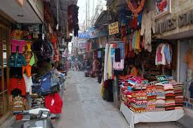
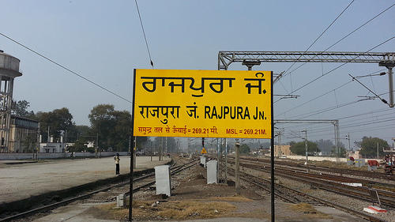

RESOURCES AROUND CHITKARA
NEELAM HOSPITAL (opposite chitkara university)Neelam hospital is just opposite to chitkara university . There specialities are eye,blood bank,dental,ENT and many more.Healthcare has become one of India’s largest sectors - both in terms of revenue and employment. Indian healthcare delivery system is categorised into two major components - public and private. The Indian healthcare sector is growing at a brisk pace due to its strengthening coverage, services and increasing expenditure by public as well private players.
JHANSLA MARKET (app. 1K.M from chitkara towards chd )

Jhansla is the nearest place to buy daily needs,Jhansla village is located in Rajpura Tehsil of Patiala district in Punjab, India. It is situated 12km away from sub-district headquarter Rajpura and 33km away from district headquarter Patiala. As per 2009 stats, Jhansla is the gram panchayat of Jansla village. The total geographical area of village is 313 hectares. Jansla has a total population of 1,935 peoples. There are about 365 houses in Jansla village. Rajpura is nearest town to Jansla.
RAILWAY STATION (10.3 km via NH 7 )


The nearest railway station from chitkara university is Rajpura railway station , which is approximate 10.3 km away from chitkara university via NH7 . It takes around 13 mins by car.
FOOD JUNCTION (near Gagan chowk)

Eagle motel is the nearest and the best food junction . There are number of franchises like pizza hut,subway,CCD,burger king,baskin robins . Eagle motel has a petrol pump also.
MULTIPLEX (app.1.5 km from chitkara via NH7)
prime hub is the nearest multiplex to chitkara . It has a PVR cinema ,shopping outlets like united colors of bennetton,levis excetra and food outlets like dominos etc.